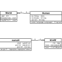

|
SVN am KIT |
Recent Posts all posts
|  |
Entwurfsmuster-Beispiele |

|
Java Puzzle #9: Template method pattern |
Übersicht der Pfeile in UML |
|
|
Java Puzzle #5: Parallel Programming, Part 2 |

|
SWT I Klausur |
|
|
Java Puzzle #4: Parallel Programming |
|
|
LaTeX-Vorlage für ein Lastenheft |
Eclipse für SWT I einrichten |